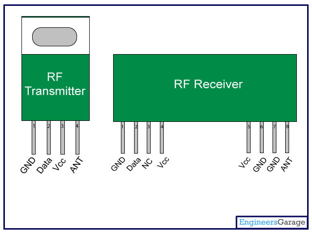

This module interfaces with the RF receiver in a limited distance according to the way power is provided to it .in this case it’s expected to work in a distance of 2-3meters since our module is expected to work under water. According to our system this module is connected with the push button and a GSM module to the Arduino Uno as the microcontroller. The RF receiver, the led and the buzzer are connected together to the Arduino Uno, as the micro controller. It receives signals from the RF transmitter that’s after the button is pressed. It also displays a message on the serial monitor that’s after the serials have been received.